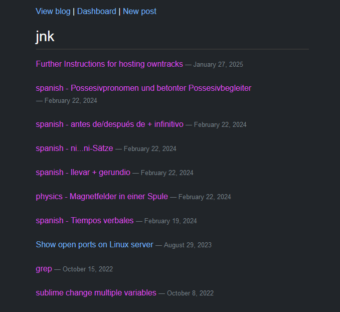
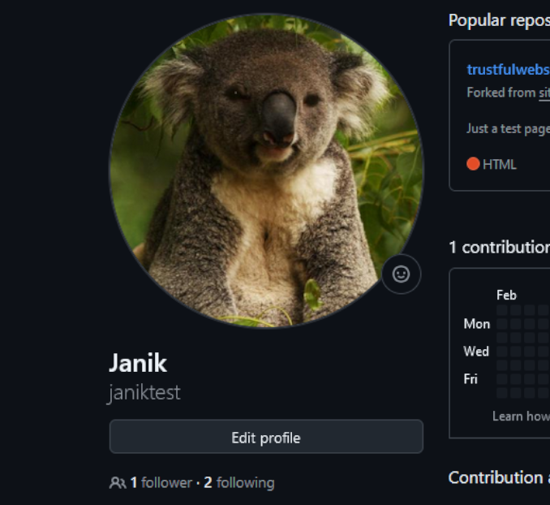

Vertrauenserweckende Webseite
Made by Janik
"Projekte"
Eigener Blog

Beschreibung
- gehostet auf mataroa.blog
- Hauptsächlich Schule und Technologien
- relativ wenig Aktivität
LernSperre

Beschreibung
- Web-App: erst eine Anki-Karte lernen, dann Instagram & Co. öffnen
- Sperre gemacht für iPhone und iPad (Safari und Kurzbefehle-App)
- Ohne iPhone? Im Modus „Nur lernen“ als normale Lern-App nutzbar
- Unabhängiges Projekt, nicht mit Anki oder Ankitects verbunden
- Import eigener Anki-Decks (.apkg) inkl. Bildern, alles bleibt lokal im Browser
- Spaced Repetition, einstellbare Freizeit und Strafen bei Fehlern
- Sperre über iOS-Kurzbefehle und Automationen
Weitere GitHub-Projekte

Öffentlich auf GitHub
- Diese Webseite inklusive LernSperre: trustfulwebsite
Weitere Projekte sind gerade noch privat. Zukünftige Projekte siehst du hier:
Zum GitHub-Profil